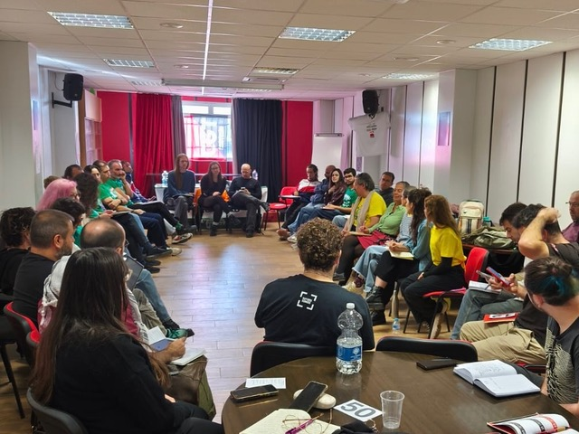

Resumen de nuestras actividades
Con este boletín queremos mantener una comunicación mensual que resuma las actividades y las iniciativas de SiAM. Si quieres más información sobre alguno de estos temas o deseas compartir tus inquietudes y proponer acciones, ¡¡¡te esperamos!!!
Nuestro próximo Grupo de Apoyo Mutuo "Café con SiAM" será el viernes, 27 de noviembre, a las 11:30h de la mañana en el aula 0.22 (cerca de la Cafetería) de la Escuela de Ingenierías. Un espacio mensual donde podrás compartir tus inquietudes y preguntas, proponer acciones y disfrutar del apoyo mutuo con nosotras. Pilla tu bebida y nosotras ponemos los dulces.
Como sabéis, SiAM forma parte de UMAxlaPública desde su fundación que, a su vez, junto con UniversidadesAndaluzasxlaPública, es fundadora de la Asamblea Andaluza por la Educación Pública, que en su asamblea del 27 de junio pasado, acordó una convocatoria de huelga para este 11N. Posteriormente, como es ampliamente conocido, esta huelga ha confluido con las que estaban preparando los Sindicatos de Inquilinas, Málaga para Vivir y otras organizaciones por todo el territorio para reclamar el derecho a la vivienda.
En coherencia con ello, y como sindicato de clase, decidimos en asamblea convocar dicha huelga y nombramos nuestro propio Comité de Huelga asumiendo las reivindicaciones de UMAxlaPública:
Como hemos señalado, el mes de noviembre ha estado marcado por el trabajo en torno a la huelga general y educativa del 11N en el marco de estas dos plataformas de las que formamos parte. Hemos participado en las diferentes asambleas convocadas por ambas plataformas para organizar la jornada, en los talleres de pancartas desarrollados por UMAxlaPública en los diferentes centros y en la asamblea del Comité de Huelga unitario vivienda-educación.
Justo antes de la huelga y apoyando el paro académico convocado por CEUMA para los días 10 y 11, participamos en las actividades de la Noche en Verde, donde tuvimos asambleas, taller de pancartas, cine-forum y taller de sindicalismo y anti-represión.
La jornada del 11N, estuvimos apoyando los piquetes informativos organizados por UMAxlaPública, participamos en la concentración de la Asamblea Andaluza por la Educación Pública a las 12:00, que se convirtió en manifestación, partiendo desde la Delegación de Educación hasta la Plaza de la Constitución. Por la tarde, participamos en el bloque educativo que dicha Asamblea organizó en la gran Manifestación de Vivienda, que la lluvia no pudo parar.
Podéis ver imágenes y vídeos de todo en el perfil de Instagram de UMAxlaPública.
Os dejamos enlace a la noticia que se hace eco de la movilización andaluza en elDiario.es: https://www.eldiario.es/andalucia/comunidad-educativa-andaluza-apoya-huelga-general-reforzar-pulso-junta-defensa-publica_1_13643035.html
El pasado 18 de noviembre tuvo lugar la Asamblea Provincial de Málaga de la plataforma Andaluza por la Educación Pública. El encuentro tuvo lugar en la Facultad de Ciencias de la Educación y se abordaron dos puntos. Comenzamos con un taller autoformativo sobre la creación de asambleas de centros, dirigido a profesorado de todas las etapas educativas. En segundo lugar, hicimos una valoración del 11N en Málaga y el estado de la asamblea provincial.
El sábado, 21 de noviembre, se celebró en Antequera la Asamblea Andaluza por la Educación Pública, donde asistió profesorado, familias y estudiantes de todas las etapas educativas. En este encuentro se estableció la hoja de ruta de las movilizaciones y organización de la comunidad andaluza por la defensa de la educación pública.
El calendario de movilizaciones aprobado incluye las siguientes acciones:
Además, la asamblea expresó su apoyo al movimiento en defensa de la educación pública en Madrid y denunció la represión que están sufriendo quienes participan en él. Asimismo, se subrayó con claridad que los resultados electorales no condicionarán en ningún caso la movilización andaluza: el movimiento seguirá adelante gobierne quien gobierne hasta que se satisfagan las reivindicaciones del sector.
Por su parte, UMAxlaPública ha convocado una asamblea el próximo miércoles 25, a las 14:00, en la Escuela de Ingenierías (en la entrada o el aula 0.21 si hace mucho frío), a la que SiAM acudirá. Te animamos a asistir y, si no puedes, vente al Café con SiAM del viernes 27 y te contamos.

El pasado 13 de noviembre SiAM participó en la Mesa Negociación del PDI. En los diferentes puntos que se trataron, SiAM mostró su compromiso con la plantilla del PDI de la UMA.
Denunciamos la intención del Vicerrectorado de Profesorado y Ordenación Académica de seguir recortando en el próximo POD, especialmente en relación con los TFE y las intenciones de reducir la oferta formativa en materias optativas. Nuestra oposición a cualquier recorte es completa y firme. No apoyaremos ninguna propuesta que no parta de una financiación justa y una defensa firme del cumplimiento de los compromisos económicos de la Junta de Andalucía.
También denunciamos el recorte de los RADs por discapacidad, que no han sido negociados con la platilla y que otra vez se aprueban mediante resolución y sin contar con las personas afectadas. SiAM no apoyó la propuesta, como ha hecho siempre, y solicitó una aclaración por parte del Vicerrectorado de Igualdad de la UMA.
Igualmente, cuestionamos la falta de solución para los contratos de orientación postdoctoral, que nuevamente vuelven a sufrir una modificación en el tipo de contratación, dejando al personal investigador indefenso. Desde el Vicerrectorado de Investigación se nos propuso una nueva adaptación de estos contratos. SiAM exigió el diseño de una carrera investigadora que contribuya a la estabilización del personal investigador y que se aleje de ideas que acaban precarizando al colectivo.
Entre otras cuestiones preguntamos por el estado de los recursos económicos del plan propio, la vinculación de empresas de apuestas digitales con actividades académicas, cuestiones relacionadas con infraestructuras (climatización, estadio de futbol).